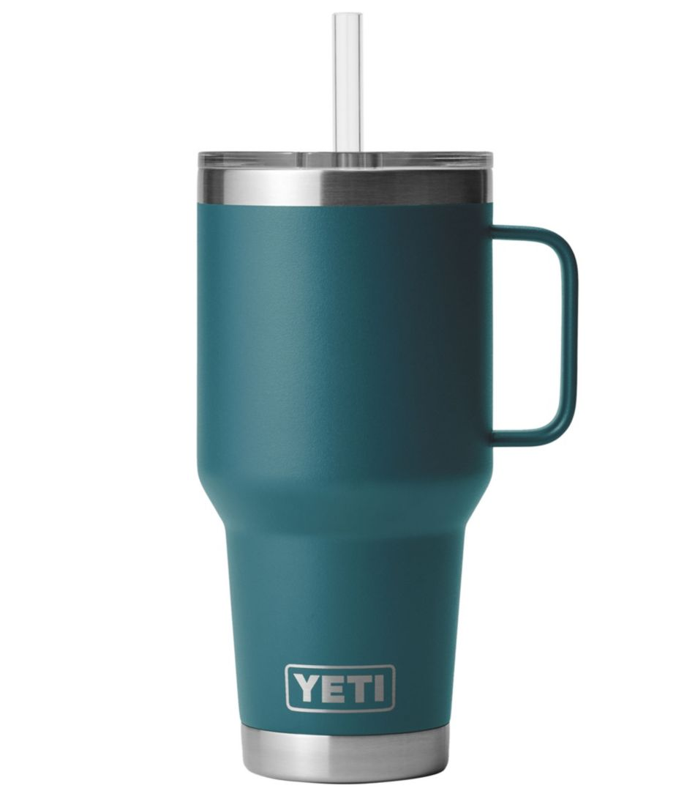

The YETI Story
The YETI StoryThe YETI cup story begins with the founding of YETI Coolers in 2006 by brothers Roy and Ryan Seiders. They were frustrated with the lack of high-quality coolers on the market, particularly for outdoor enthusiasts. Their innovative designs, focusing on durability and insulation, quickly gained popularity. The success of the coolers led YETI to expand into drinkware, launching their insulated tumblers and mugs. The YETI Rambler series became known for keeping drinks hot or cold for hours, making them a favorite among campers, hunters, and anyone who spends time outdoors. YETI products are built for performance and toughness, appealing to a wide range of consumers, from serious adventurers to casual users. Their distinct branding and quality craftsmanship have turned YETI into a lifestyle brand, symbolizing a love for the outdoors. The story of the YETI cup reflects a commitment to quality and an adventurous spirit, resonating with those who appreciate rugged gear.
Our Mission
The YETI Cup mission revolves around creating durable, high-performance drinkware and coolers designed for outdoor enthusiasts and adventurers. YETI aims to provide products that keep beverages at the ideal temperature for extended periods, no matter the environment. Their focus on quality, functionality, and rugged design appeals to those who value both outdoor activities and craftsmanship. Overall, the mission is about enhancing outdoor experiences through innovative and reliable gear.
Why Choose YETI?
- Innovative Design: We prioritize functionality and style, ensuring our products meet the demands of outdoor life.
- Tested by Experts: YETI products are tested in extreme conditions by adventurers and professionals alike, ensuring they can handle whatever comes your way.
- Sustainability: We’re dedicated to reducing our environmental impact by using sustainable materials and practices in our production processes.
- With a commitment to quality and performance, YETI cups are built for those who appreciate the great outdoors. Our products are not just about functionality; they're designed to make every moment special, whether you’re at home or on a hike.